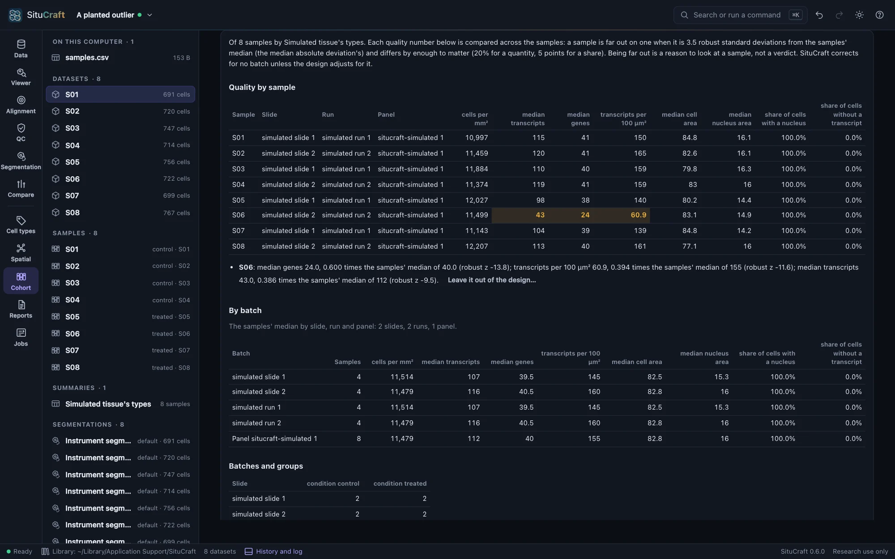
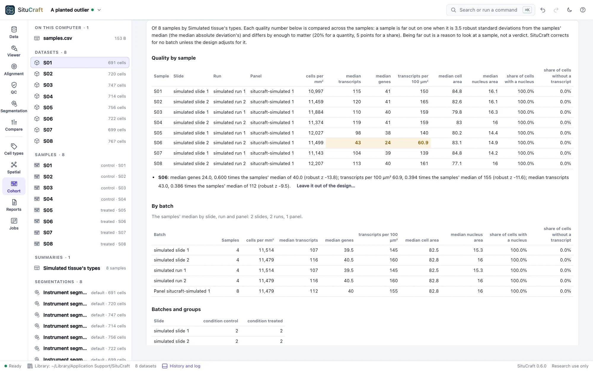

Cohort QC, batches and panels
A difference between groups is only as good as the samples behind it. Before any comparison, SituCraft lays the samples side by side, flags those far from the others with the reason, shows how the batches fall across the groups, and compares the panels, so that only genes every sample measured are compared.
Quality by sample
The Cohort view's Cohort QC, batches and panels reads the cohort table's summary (see Sample summaries). It lists each sample's quality numbers beside its bundle's slide, run and panel:
- cells per mm²
- median transcripts and median genes per cell
- transcripts per 100 µm²
- median cell and nucleus areas
- the shares of cells with a nucleus and without a transcript
These follow a sample's quality, not its size: the cells and transcripts in all, and the tissue's area, are left out. A segmentation that records no nucleus shows its nuclei's numbers as missing, never zero. The instrument's segmentation takes its nuclei from the bundle's cells table.
A sample is far out on a number when it meets both of these conditions:
- Its robust z-score is at least 3.5. The score is its distance from the samples' median over 1.4826 times their median absolute deviation, as Iglewicz and Hoaglin's modified z-score is.
- It differs by enough to matter: 20% of the median for a quantity, compared on a log scale, or 5 points for a share.
Where half the samples agree exactly, the mean absolute deviation (times 1.2533) is the spread instead. Fewer than five samples are too few to call one far out.
A sample far out is highlighted, and listed with the reason in words, such as median transcripts 43.0, 0.386 times the samples' median of 112 (robust z −9.5). Nothing is passed or failed. Leave it out of the design… asks why, and the design keeps the reason with the sample (see The design). A sample is left out of a comparison only that way.


Batches
By batch gives the samples' median of each number by slide, by run and by panel. A batch whose samples differ from the others' is worth knowing before any comparison.
Batches and groups counts each slide's, run's and panel's samples in each of the design's groups. A batch that holds only one group confounds the groups with it: a difference between them could be the batch's. SituCraft says so here, and the design refuses to compare them unless it adjusts for that batch. Batches that hold the groups unevenly are noted. SituCraft corrects for no batch unless the design names it as a covariate.
The pseudobulk's principal components
Each sample's pseudobulk (its labeled cells' transcripts, summed) over the genes every panel has becomes log2(1 + counts per million). The 500 most variable genes are kept, as DESeq2's plot of principal components keeps its top genes. They are centered and decomposed into principal components, with nothing corrected.
The plot shows the samples on any two components, colored by any field: the groups, the subject, the slide, the run or the panel. Samples that gather by a batch rather than by group show a batch effect to account for, and a sample apart from all is one to look at. Each sample's scores are also in the cohort table (its family The pseudobulk's principal components), and SituCraft's components are checked against numpy's on every change.
Panels
Samples read with different gene panels can be compared only on the genes every panel has. SituCraft compares each sample's panel from its bundle, matching genes by name as transcripts carry them, and lists:
- the panels, with their designs, versions, genes and samples;
- the genes every panel has: the only ones compared across samples, such as by the principal components above and the comparisons to come;
- the genes in some panels only, which are not compared;
- shared genes read by other codewords: each panel designs its own probes, so a gene may be detected a little differently in each;
- genes named alike with other Ensembl IDs, or one ID under other names.
The Lung and Breast development bundles, for example, share 67 of their 289 and 280 genes.
By remote control
cohort_qc reads a summary's QC: each sample's numbers and batches, the samples far out with their reasons, the numbers by batch, the design's batches by group with what it says of confounding, the principal components and the panels. compare_panels compares the samples' panels before any summary. See Remote control.
How it is checked
The validation suite checks:
- The simulated cohort's eight samples: none is far out, each slide and run holds both groups, and there are principal components over its one panel.
- With the groups made to follow the slides, the QC says they are confounded with them.
- A cohort whose sixth sample was planted to detect 40% of its transcripts (
situcraft simulate --cohort outlier): that sample alone is found far out, below the others on its transcripts and genes. - The Lung and Breast panels' genes in both, in one, and read by other codewords, each equal to the suite's own count from the panels' files.
The principal components equal numpy's to 10⁻¹³ on three cases, and the rule for flagging a sample is checked by hand.